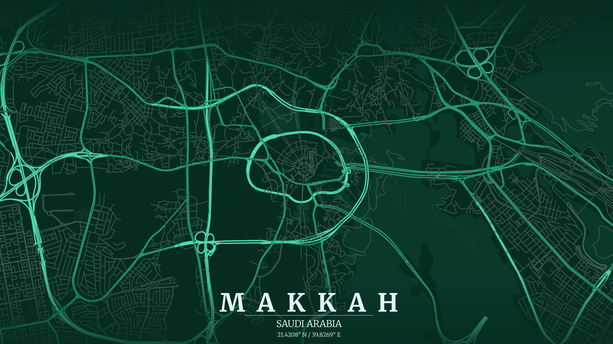

Birth
Prophet Muhammad ﷺ was born in Makkah into the noble clan of Banu Hashim. His father, Abdullah, died before his birth, and his mother, Aminah, passed away when he was still a child. He was cared for by his grandfather and later his uncle Abu Talib. As he grew, he became known for honesty, trustworthiness, and noble character, earning the title Al-Amin.